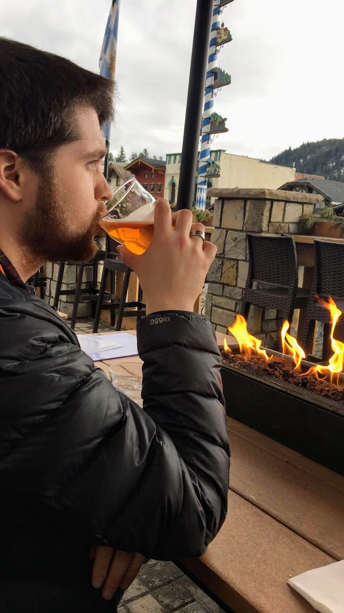

About Me

Hello! My name is Nich (short for Nicholas), I have been writing code for almost a year now and I enjoy it more and more each day. I started this process on a whim last September by taking a Programing 109 course at Bellevue College. Never before had a class motivated me to work and study so easily, I was hooked. In the months leading up to this course I have been learning whatever I can on my own, but I am very much looking forward to formal training with structure to ensure I don't miss anything important.
Outside of school my enjoy spending time with my friends, girlfriend, and family doing just about anything, I'm not picky. My favorite pastimes include skiing (above all else), hiking, food and drink (namely beer, bourbon, and wine), traveling and playing both video and card games.
The parts of Web Development that I enjoy most so far are front-end and design oriented but I want to become more familiar with the back-end processes as well as making complex applications with JS. I know I have so much to learn and I can't wait to get started!